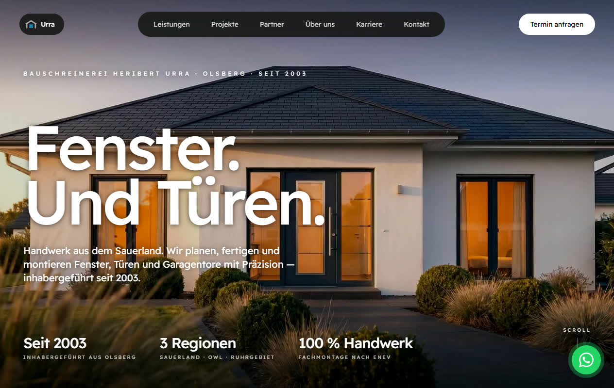
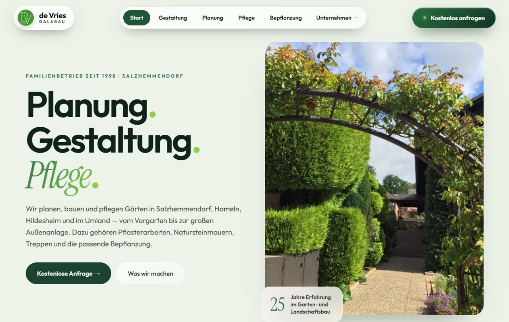
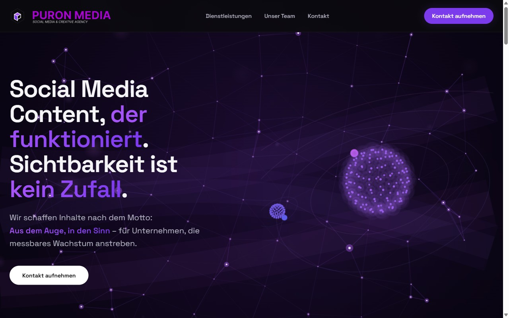
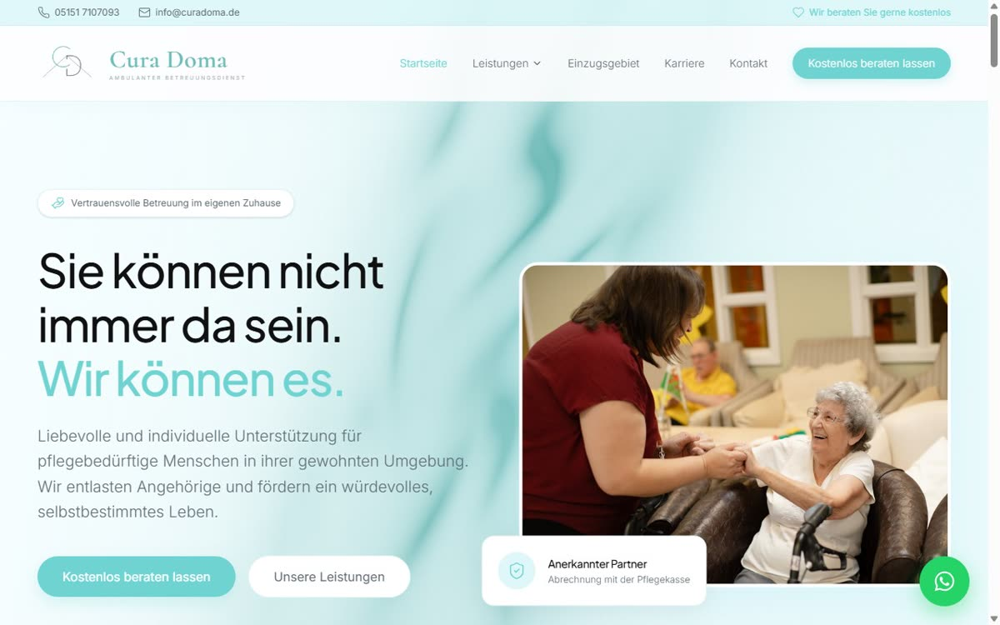
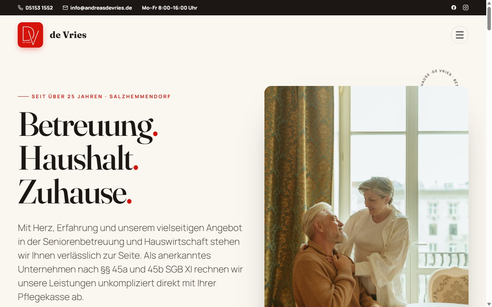

Ausgewählte Arbeiten.
Kein Stockfoto-Portfolio. Was hier steht, ist echt gebaut — sorgfältig, schnell und mit Anspruch. Ein Auszug aus unseren bisherigen Arbeiten.

Live ↗Bauschreinerei
Urra
Bauschreinerei aus Olsberg — Fenster, Türen und Tore, inhabergeführt seit 2003. RAL-zertifizierte Montage nach EnEV, millimetergenaues digitales Aufmaß und ein eigenes Montage-Team; im Einsatz im Sauerland, in Ostwestfalen-Lippe und im Ruhrgebiet. Wir haben den Webauftritt umgesetzt — ruhig, handwerklich präzise und klar auf den Aufmaß-Termin ausgerichtet. Schau es dir live an.
urra-fenster.de ansehen ↗
Live ↗de Vries
Galabau
Garten- und Landschaftsbau aus Salzhemmendorf — Familienbetrieb seit 1998, tätig in Hameln, Hildesheim und im Weserbergland. Planung, Gestaltung, Pflege und Bepflanzung aus einer Hand: Pflasterarbeiten, Trockenmauern aus Naturstein, Treppen und Teiche. Wir haben den Webauftritt umgesetzt — bildstark, ruhig und klar auf Anfragen ausgerichtet. Schau es dir live an.
devries-galabau.de ansehen ↗
Live ↗Puron Media
Agency
Social-Media- & Creative-Agency mit einem klaren Auftrag: Sichtbarkeit ist kein Zufall. Wir haben den digitalen Auftritt umgesetzt — mit Bewegtbild-Hero, animiertem Partikel-Raum und markanter Typografie. Schau es dir live an.
puron-media.de ansehen ↗
Live ↗Cura
Doma
Ambulanter Betreuungsdienst mit Herz — „Sie können nicht immer da sein. Wir können es." Ein warmer, vertrauensvoller Auftritt für Pflege & Betreuung zuhause: klar strukturiert, einladend und auf Angehörige zugeschnitten. Schau es dir live an.
curadoma.de ansehen ↗
Live ↗de Vries
Betreuung
Familienbetrieb seit über 25 Jahren: liebevolle Seniorenbetreuung und Haushaltshilfe in Salzhemmendorf — anerkannt nach §§ 45a/45b SGB XI, direkt mit der Pflegekasse abgerechnet. Wir haben den Webauftritt umgesetzt: warm, vertrauensvoll und klar auf Angehörige zugeschnitten. Schau es dir live an.
andreasdevries.de ansehen ↗Der nächste Case ist deins.
Wir nehmen maximal vier aktive Projekte gleichzeitig an. Wenn du es ernst meinst, sichern wir dir einen festen Platz und volle Aufmerksamkeit.
Projekt starten